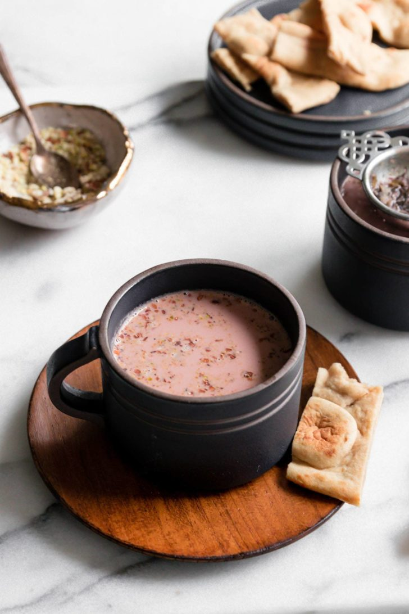

Kashmiri Chai

Decription
Kashmiris don’t actually call their chai “Kashmiri Chai”. That’s the term used by Pakistanis and Indians to describe the Kashmiri Noon Chai (translated to Salt Tea). As the name suggests, Noon chai is a salty drink, but has gained popularity across Pakistan as a sweet concoction.
Often called Pink Tea, Kashmiri chai is a milk tea characterized by its dusty pink color and garnishing of crushed nuts. It’s brewed with green tea leaves and baking soda, and then mixed with milk to give it a distinct pink color.
Even within Pakistan, Kashmiri Chai is a bit of a delicacy because of the long, somewhat arduous process of making it.
Ingredients
- 1 cup water
- 2 tbsp Kashmiri chai leaves, or sub any non-bitter green tea leaves
- 2 star anise (badiyan)
- 6-8 green cardamom pods
- 1 " cinnamon stick, optional
- 2 whole cloves (loung), optional
- 1 cup whole milk
- 1/8 tsp heaped baking soda
- ½ cup half and half (See Note 1)
- 1/4 tsp kosher salt – may need less if using sea salt, or to taste
- 2-2.5 tbsp sweetener of choice, I've tried cane sugar, brown sugar, and date syrup
Steps
- Prepare ice water: Combine room temperature water with 2-3 large ice cubes and set aside.
- Heat a medium saucepan over high heat. Add water, Kashmiri chai leaves, star anise, green cardamom pods, cloves and cinnamon (if using) and bring to a boil.
- Once it comes to a boil, add the baking soda. It’ll fizz a little. Allow this mixture to boil over high heat for 5-6 minutes. Occasionally, use a ladle to aerate (scoop and pour back) the tea. You’ll notice the froth in the water go from pale green to a deep pink color. If not, add another 1/8 tsp of baking soda. (See Note 2) The water will be greatly reduced, almost evaporated.
- Add the prepared ice water (discard any ice cubes). If you’d like, you can aerate several times to deepen the color. Add the milk, half & half, salt, and sweetener. Allow it to a come to a light boil, then immediately turn off the heat. Do not allow it to boil for too long as it'll start to lose some of its pink color. Taste and adjust salt and sweetener.
- Strain the tea into cups and add crushed almonds and pistachios, as desired.